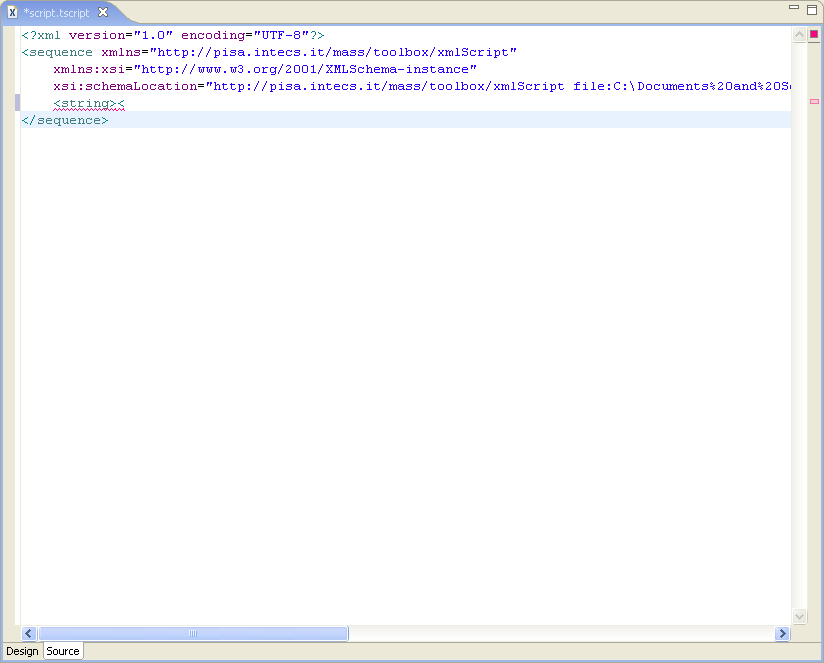

To add a new tag, move the cursor to the insertion position.
Type the tag to insert. During tag insertion, completion features are shown to the user, speeding up the editing of the file.
If errors occurs during editing the file, a red zig-zag line is added over the code and red marks are displayed on the right of the editor.
